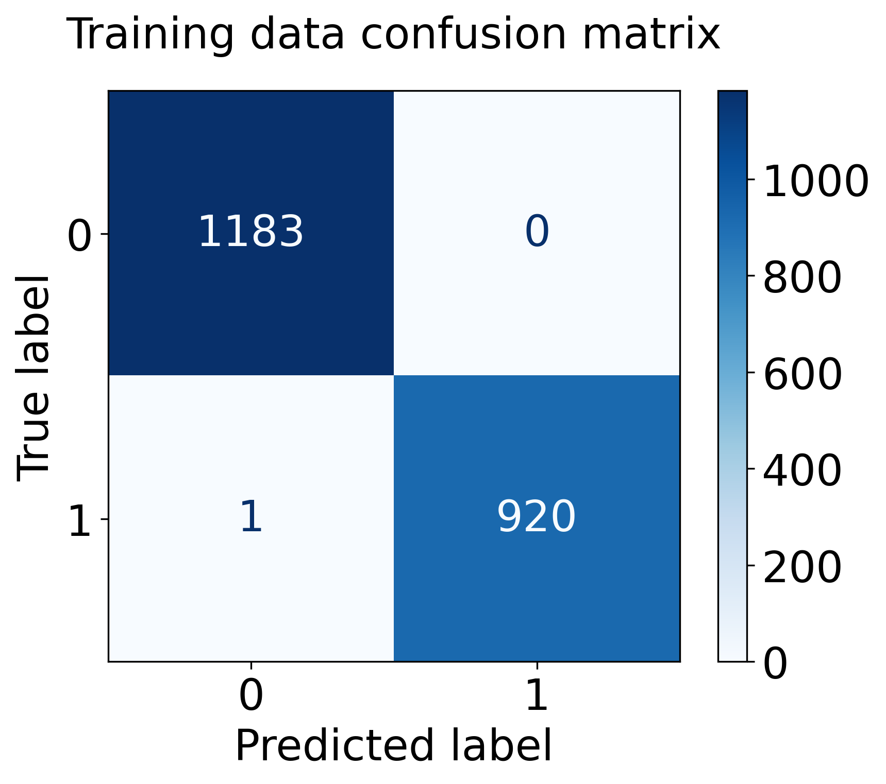

Model introduction
A decision tree is a type of supervised machine learning algorithm used to categorize or make predictions based on how
a previous set of questions were answered. The model is a form of supervised learning, meaning that the model is
trained and tested on a set of data that contains the desired categorization.The decision tree is like a tree with nodes.
The branches depend on a number of factors. It splits data into branches like these till it achieves a threshold value.
A simple example to further understand decision trees is predicting whether or not a person will show up to an outdoor football
game based on several whether related factors. The example is visualized below:

As we move down the hierarchical structure of the tree (top to bottom), more information is gained and the ability to predict
the outcome becomes easier. The above example is a tree that has a depth of 2 (representing only 2 questions asked), but other problems
(like my project which is discussed in the next paragraphs) are harder to solve and have many more variables, which consequently cause the
tree to go deeper.
Model use in the project
Unlike the Naive Bayes model, which was used to predict a song's era (50s,60s,70s, etc.), I decided to use decision trees
for a different more impactful purpose. I used decision trees to predict whether or not a certain song would make it to a user's
playlist based on their Spotify playlist (this user was me at this stage of the project). Also, at the end of this page is a section called
'Model impacts' which discusses how this model could be used in a production environment and what problem does it solve.
Briefly, this is how the model's logic works::
The decision tree algorithm works in the following steps:
• User (me in this case) inputs Spotify playlist.
• Spotify API returns the musical features for each song (all found under the Data tab).
• Only numeric features are kept
• Playlist songs are labelled with 1 (representing in playlist)
• Additional songs that are not in the playlist are added and labelled with 0 (not in playlist)
• Fitted model is used to predict if other songs (not in dataset) would or would not be recommended (1 or 0).
Below is an explanation on how all of this was done on my Spotify playlist.
Data Collection and EDA
Since the problem statement for this section changed, I needed to gather additional data to accommodate for that
and gather additional data that fits the new problem. As previously mentioned, the goal of this section was to build
a classifier (recommender) that predicts whether or not a certain song would make it to my playlist based on several
audio related features. To do so, i combined my own playlist with 3 other playlists full of songs that are not in my playlist to have
a final playlist that has mix of in playlist (i.e would be recommended to me) songs and not in playlist (i.e not recommended) songs.
For reference, I am a huge rock and metal fan and my 1000+ song playlist reflects that (seen in the graph below), which is why I gathered
Rnb, hip hop, and techno playlists, since they are very different from the type of music i listen to.
After combining all the playlists, the final playlist/dataset has the following distribution of classes:
As figure 9 illustrates, the dataset is well balanced between both classes and is a good dataset to
start modeling on. The last exploratory step before modeling was understanding which features differ
between classes and in what way, serving as a basic feature selection method to improve any model's
predictive ability. The distribution plots of all the dataset's features in both playlists can be visualized below:
The most main takeaways from the above distribution plots are:
• The features where there barely are any differences between both playlists are Liveness, Duration (ms), Key, and mode. These features
were dropped to avoid unnecessary variables in my model.
• The biggest differences between playlists come from valence, danceability, energy, and speechiness.
• The remaining features moderately differ between both playlists might or might not have a significant impact.
Building a decision tree
Just like what was done with Naive Bayes, the first step was splitting the data into training and testing data (80% train, 20% test). Next,
Python's sklearn library was used to build a decision tree model on the training and later use it on the testing data to check the accuracy. One of the main
disadvantages of decision trees is tendency for over fitting.
Over fitting refers to the condition when the model completely fits the training data but fails to generalize the testing unseen data. Overfit
condition arises when the model memorizes the noise of the training data and fails to capture important patterns. A perfectly fit decision tree
performs well for training data but performs poorly for unseen test data.
There are many ways to avoid an over fit decision tree, one of which is calculating the training and testing accuracies for different values of max_depth
and get the optimal point accordingly. Max_depth is a decision tree hyperparameter that controls the maximum depth of the tree that will be created and the
optimal point is the depth level at which the training error monotonously increases and testing error monotonously decreases after that depth.
The max_depth vs training/validation error relationship can be seen in the graph below:

The graph indicates to us that a max depth of n = 6 is the best option for the decision tree we have built as any depth after that
will cause the model to over fit and perform poorly with data other than the training data. The fact that after n = 6 the training
error keeps on increasing while the testing keeps on decreasing validates that idea.
After getting the optimal max_depth for our decision tree (which was 6), the next step was fitting a decision tree with this value of max depth and
testing several of its metrics, which are detailed below:

Fig. 12 -Confusion matrices for train and test set
The confusion matrixes of the training data and testing data perfectly represent the model's performance, where the it
does not mislabel any data point (except for 1) when used on the training data and mislabels some points when used on the testing data. This
is further validated by the metrics below:
--- TRAINING ---
ACCURACY: 0.9995247148288974
NEGATIVE RECALL: 0.7154953429297206
POSITIVE RECALL: 0.6237989652623799
NEGATIVE PRECISION: 0.6240768094534712
POSITIVE PRECISION: 0.7152542372881356
--- TESTING ---
ACCURACY: 0.8954372623574145
NEGATIVE RECALL: 0.625
POSITIVE RECALL: 0.9553752535496958
NEGATIVE PRECISION: 0.7142857142857143
POSITIVE PRECISION: 0.9345238095238095
Below are the definitions of each of the above metrics:
• Accuracy: % of correct predictions.
• Precision: The precision of a model describes how many detected items are truly relevant. It is calculated by dividing the true positives by overall
positives.
• Recall: Recall is a measure of how many relevant elements were detected. Therefore it divides true positives by the number of relevant elements.
My model performed very well in terms of accuracy (99% training and 89% testing) and precision (93% for test set), indicating that the model has good predictive
ability when it comes to predicting true positives. In production terms, my model has a good chance of detecting whether a song will actually make a playlist
and the mistakes would occur by not recommending what would have been a recommended worthy song (low negative recall score).
The final decision tree can be visualized below:

Note: Hover over decision tree to get a zoomed in clear look at the nodes.
Random Forest
Essentially, a random forest is an algorithm which combines the output of multiple decision trees to reach a single result using ensemble methods. Everything I had
done so far and explained above is used one single decision tree as my classifier, which has 2 main disadvantages:
1. A small change in the data can cause massive change in the structure of the decision tree, as it is very dependent on where the first split occurs. This causes
the model to be highly unstable.
2. Decision trees have a tendency to over fit.
Random forests compensate for these disadvantages by training multiple decision trees (at different splits) and generate a single result out of all of them. Also,
random forests have a built in feature selection process that makes sure only relevant features are used by the model.
The random forest model gave me a final 100% training accuracy and a 92% testing accuracy, both of which were an improvement from my optimized decision tree.
Conclusion
Overall, the use of decision trees and random forests was a success, were they where both able to accurately (90% +) classify a song as recommended or not recommended to my playlist based on the playlist itself. The use cases and production environment in which these models could be used in are discussed in the 'Implementation' tab. (The tab has still not been developed at this stage of the project)